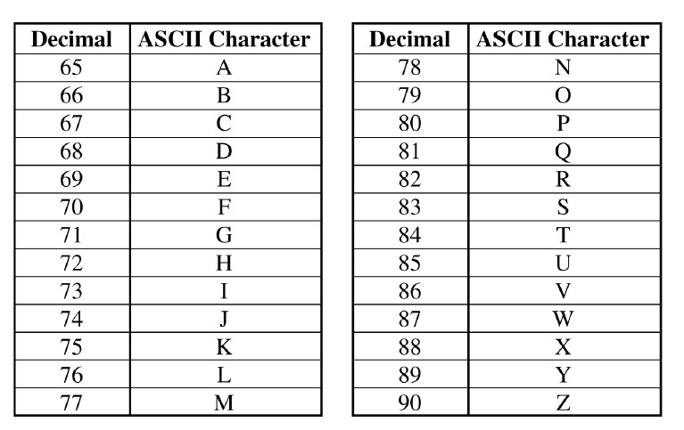

ASCII is a character-encoding scheme that uses 7 bits to represent each character. The decimal (base 10) values 65 through 90 represent the capital letters A through Z, as shown in the table below.

What ASCII character is represented by the binary (base 2) number 1001010 ?